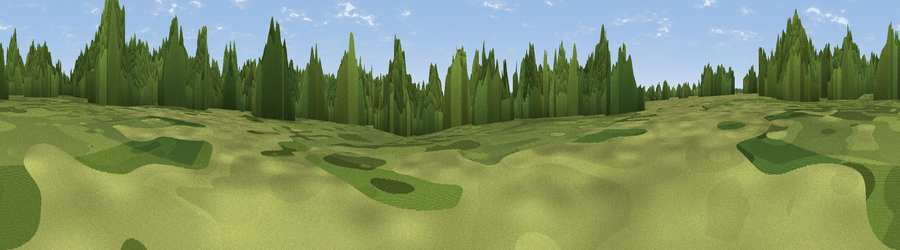

Seven Rides
#44626 in England · top 94% of its area beats it · near StrattonThe view, rendered

A 360° render of this exact spot computed from the terrain model, tree cover and land cover — summer colours, afternoon light, calibrated against photographs of famous viewpoints. Real trees, hedges and buildings will differ in detail.
The panorama
Grey silhouette: terrain skyline in each direction (720 bearings, Earth curvature and refraction included). Dashed green: skyline with trees (+15 m) and buildings (+8 m) as obstacles. Blue strip: how far the ground is visible on each bearing.
Where the view opens
Wedge length = distance to the farthest visible ground on that bearing (vegetation-aware). Rings at 10, 25 and 50 km.
What fills the view
55% woodland · 28% grassland · 14% cropland · 3% built-up
Angular shares of the visible panorama (visual magnitude), not map area. Landscape diversity 0.47 (0–1 Shannon).
Key numbers
More beautiful places nearby
The staircase of upgrades: each row has a higher view potential than everything closer. Driving times are estimates from straight-line distance, calibrated against real road routing — check an actual route before setting out.
| Place | Direction | Drive | Score |
|---|---|---|---|
| Ten Rides | W · 3 km | ~8 min | 27.3 |
| Sapperton Hill | WNW · 5 km | ~10 min | 45.2 |
| Viewpoint near Rendcomb | NNE · 10 km | ~19 min | 51.2 |
| Pen Hill | N · 10 km | ~19 min | 66.4 |
| Birdlip Hill | NNW · 14 km | ~25 min | 71.7 |
| Viewpoint near Witcombe | NNW · 16 km | ~28 min | 72.2 |
| Viewpoint near Great Witcombe | NW · 16 km | ~29 min | 80.5 |
| Nottingham Hill | N · 26 km | ~42 min | 80.9 |
51.71968, -2.00232 · source: osm viewpoint · position refined by local search. Computed location — check access rights before visiting.